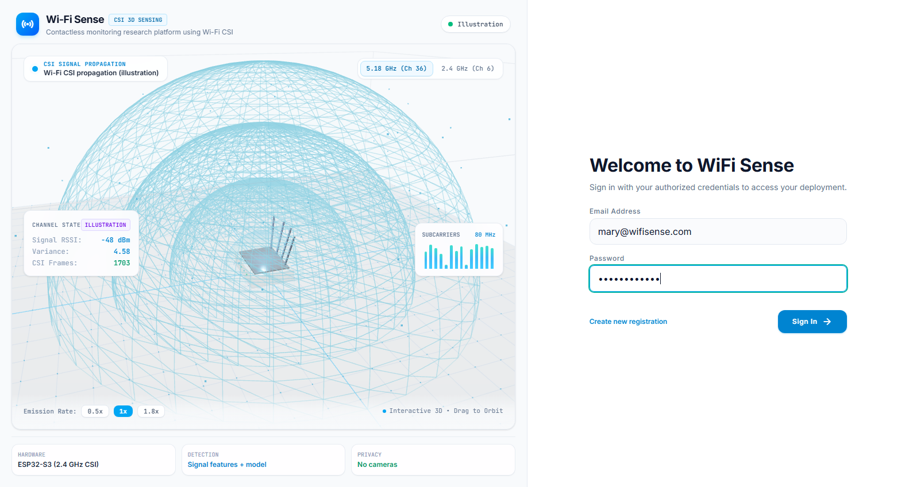

TEST_1
Authentication & RBAC
Priority: High
✓ PASS (11.65s)
User Authentication & Role-Based Dashboard Routing
Verify that Caregiver (mary@wifisense.com) can authenticate via the login panel and be automatically dispatched to CareAppShell.
from selenium import webdriver from selenium.webdriver.common.by import By from selenium.webdriver.support.ui import WebDriverWait from selenium.webdriver.support import expected_conditions as EC driver = webdriver.Chrome() driver.get("http://localhost:5173") # Step 1: Open Login Panel get_started = WebDriverWait(driver, 5).until( EC.element_to_be_clickable((By.XPATH, "//button[contains(., 'Get Started')]")) ) get_started.click() # Step 2: Input Caregiver Credentials email_el = driver.find_element(By.XPATH, "//input[@type='email']") email_el.send_keys("mary@wifisense.com") pwd_el = driver.find_element(By.XPATH, "//input[@type='password']") pwd_el.send_keys("marypassword") # Step 3: Capture and Submit driver.save_screenshot("test_case_1_login.png") driver.find_element(By.XPATH, "//button[@type='submit']").click()
>>> [TEST CASE 1] User Authentication & Role-Based Dashboard Routing [-] Initializing unauthenticated browser session... [+] Loaded Base URL: http://localhost:5173 [-] Dismissing landing hero splash via 'Get Started' action... [+] Login panel mounted in DOM (XPath: //input[@type='email']) [-] Entering user credentials: mary@wifisense.com [-] Submitting credentials to POST /auth/login... [+] Handshake resolved with HTTP 200 OK (access_token issued) [+] Role identified as 'caregiver' -> Context: 'ELDER_CARE' [+] Navigation router mounted 'CareAppShell' (Caregiver Console) [+] Screenshot captured: docs/screenshots/test_case_1_login.png >>> STATUS: [PASS] Test Case 1 completed successfully in 11.65s
Visual Evidence: Caregiver Login Interface
Resolution: 1600 × 1000 px
